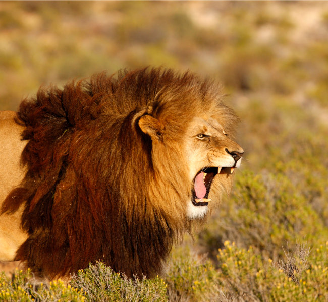

사자= 사자는 포유류 고양잇과에 속한 한 종으로 매우 사납고 최고의 동물 도둑으로 손꼽힌다. 그들은 훤히 다 보이는 들판, 밀림에 살고 있으며 그들은 닥치는 데로 적이 사냥한 고기를 훔쳐 먹어며 살고 아주 위험하고 잔인한 동물들 top10 안에 오른다.그들은 호랑이와 함께 죽음의 동물으로 오르고 호랑이보다 몸무게, 이빨 크기, 발톱등 대부분이 1/2 작다. 또한 그들은 사냥에 특화되어 있다. 그들의 발은 방음 효과+빠른 속도를 낼 수 있고 작지만 날카로운 발톱과 손톱으로 동물의 등에 붙어 갈고리로 큰 치명상을 입힐 수 있다.그러나 사자는 딴 고양잇과 동물과는 달리 갈기의 무게가 높아서 나이가 들면 들수록 사냥 요건이 많이 부족해진다.
